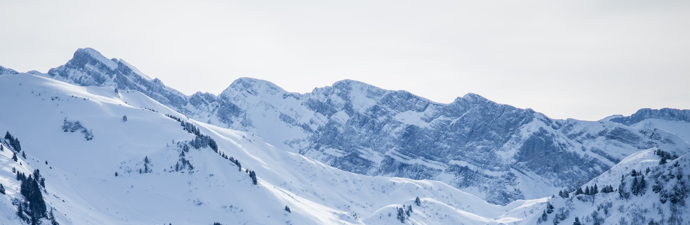
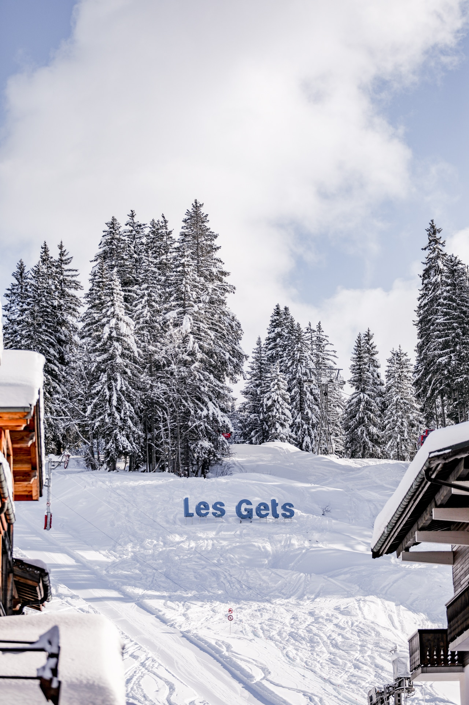
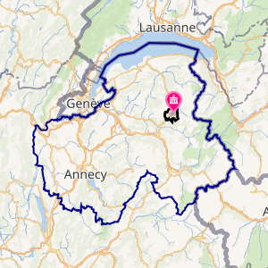

BIENVENUE

Les Gets - Présentation

des Gets
Les Gets est une commune de montagne située en Haute-Savoie, dans la région Auvergne-Rhône-Alpes, au cœur du massif du Chablais. Le village, niché à 1 200 m d'altitude et s'étendant entre 900 et 1 820 m sur près de 30 km², occupe le col des Gets, qui sépare la vallée d'Aulps au nord de celle de Taninges au sud.
Avec environ 1 227 habitants, appelés les Gêtois, Les Gets conserve son identité rurale tout en accueillant une station de sports d'hiver reconnue, reliée au vaste domaine des Portes du Soleil. Cette attractivité lui vaut l'obtention du label « commune touristique ».
La commune bénéficie d'un environnement naturel très préservé, composé majoritairement de forêts et de pâturages. Son climat est typique de la moyenne montagne : les précipitations venues de l'ouest atteignent encore pleinement le nord des Alpes, rendant le village particulièrement arrosé. L'histoire et la toponymie des Gets restent étroitement liées aux activités pastorales et au travail du bois, qui ont façonné son paysage et son identité au fil des siècles.

de la mairie dans le département